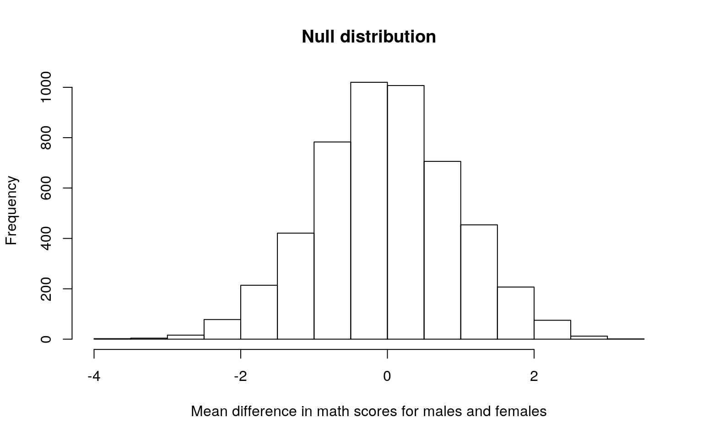
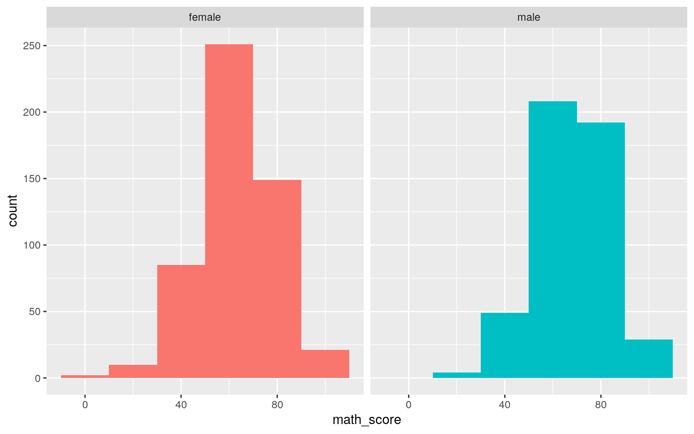
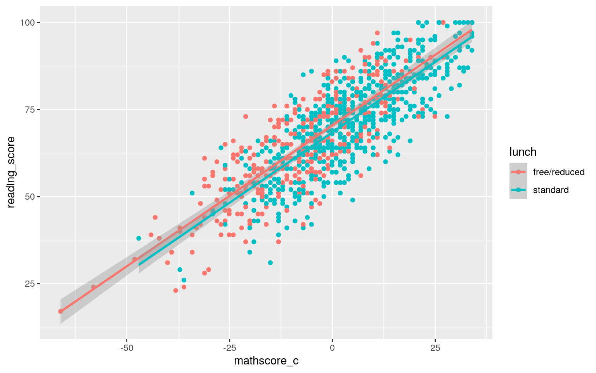
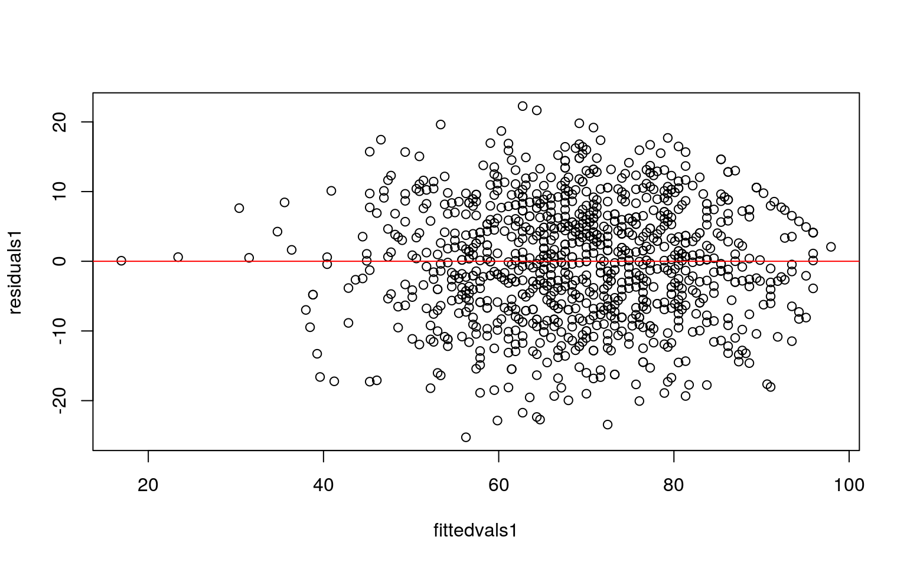
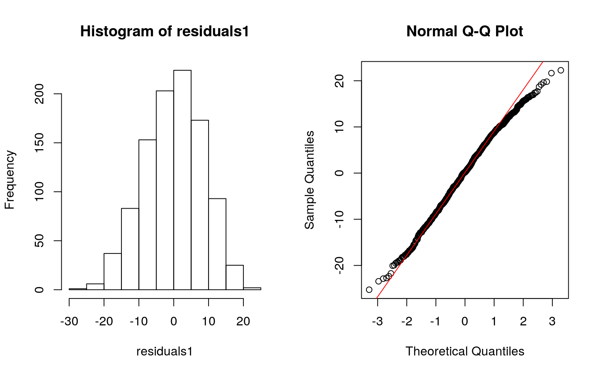
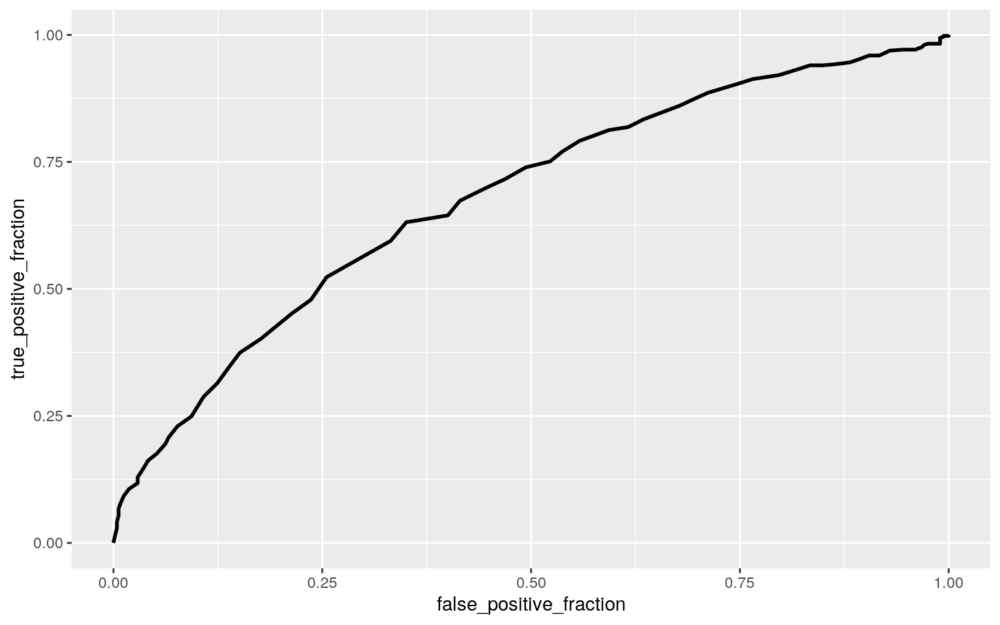
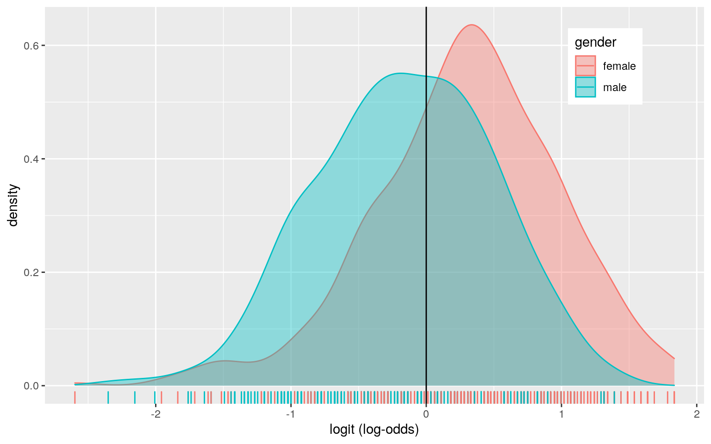

dataset <- read_csv("StudentsPerformance.csv")
# https://www.kaggle.com/spscientist/students-performance-in-exams
library(tidyverse)
library(dplyr)
# change column names so they don't have spaces
dataset1 <- dataset %>% rename(race_ethnicity = `race/ethnicity`, parental_ed = `parental level of education`, test_prep = `test preparation course`, math_score = `math score`, reading_score = `reading score`, writing_score = `writing score`)This dataset is called Students Performance and was found on the Kaggle website. It describes test scores of high school students in the United States. There are 8 variables: 1) gender 2) race/ethnicity - 5 types but the actual races are not specified 3) level of parental education - ex: high school, some college 4) lunch - which says whether the student receives free/reduced lunch or regular lunch 5) test preparation - whether the student did a test prep course 6) math score 7) reading score and 8) writing score. There are 1,000 entries in this dataset.
manova1 <- manova(cbind(math_score, reading_score, writing_score)~parental_ed, data = dataset1)
summary(manova1)## Df Pillai approx F num Df den Df Pr(>F)
## parental_ed 5 0.093298 6.381 15 2982 1.477e-13 ***
## Residuals 994
## ---
## Signif. codes: 0 '***' 0.001 '**' 0.01 '*' 0.05 '.' 0.1
' ' 1summary.aov(manova1)## Response math_score :
## Df Sum Sq Mean Sq F value Pr(>F)
## parental_ed 5 7296 1459.11 6.5216 5.592e-06 ***
## Residuals 994 222394 223.74
## ---
## Signif. codes: 0 '***' 0.001 '**' 0.01 '*' 0.05 '.' 0.1
' ' 1
##
## Response reading_score :
## Df Sum Sq Mean Sq F value Pr(>F)
## parental_ed 5 9506 1901.30 9.2894 1.168e-08 ***
## Residuals 994 203446 204.67
## ---
## Signif. codes: 0 '***' 0.001 '**' 0.01 '*' 0.05 '.' 0.1
' ' 1
##
## Response writing_score :
## Df Sum Sq Mean Sq F value Pr(>F)
## parental_ed 5 15623 3124.65 14.442 1.12e-13 ***
## Residuals 994 215054 216.35
## ---
## Signif. codes: 0 '***' 0.001 '**' 0.01 '*' 0.05 '.' 0.1
' ' 1pairwise.t.test(dataset1$math_score, dataset1$parental_ed, p.adj="none")##
## Pairwise comparisons using t tests with pooled SD
##
## data: dataset1$math_score and dataset1$parental_ed
##
## associate's degree bachelor's degree high school
master's degree some college
## bachelor's degree 0.37674 - - - -
## high school 9.5e-05 3.4e-05 - - -
## master's degree 0.39537 0.88140 0.00064 - -
## some college 0.59356 0.18342 0.00066 0.23162 -
## some high school 0.00359 0.00093 0.37956 0.00549 0.01544
##
## P value adjustment method: nonepairwise.t.test(dataset1$reading_score, dataset1$parental_ed, p.adj="none")##
## Pairwise comparisons using t tests with pooled SD
##
## data: dataset1$reading_score and dataset1$parental_ed
##
## associate's degree bachelor's degree high school
master's degree some college
## bachelor's degree 0.20392 - - - -
## high school 1.0e-05 7.6e-07 - - -
## master's degree 0.03415 0.29849 6.1e-07 - -
## some college 0.27787 0.02960 0.00069 0.00479 -
## some high school 0.00561 0.00037 0.13118 9.2e-05 0.07845
##
## P value adjustment method: nonepairwise.t.test(dataset1$writing_score, dataset1$parental_ed, p.adj="none")##
## Pairwise comparisons using t tests with pooled SD
##
## data: dataset1$writing_score and dataset1$parental_ed
##
## associate's degree bachelor's degree high school
master's degree some college
## bachelor's degree 0.03781 - - - -
## high school 2.9e-07 2.7e-10 - - -
## master's degree 0.00740 0.32770 2.0e-09 - -
## some college 0.44771 0.00668 9.5e-06 0.00152 -
## some high school 0.00073 1.3e-06 0.10902 1.2e-06 0.00736
##
## P value adjustment method: none# 1 MANOVA + 3 ANOVA's + 15 t-tests (3 test types x 5 parental ed levels) = 19 tests performed
1 - (0.95^19) # probability of least 1 type-1 error## [1] 0.62264640.05/19 # bonferroni correction## [1] 0.002631579# testing assumptions
library(rstatix)
group <- dataset1$parental_ed
DVs <- dataset1 %>% select(math_score, reading_score, writing_score)
sapply(split(DVs,group), mshapiro_test)## associate's degree bachelor's degree high school
master's degree some college
## statistic 0.9949768 0.9832739 0.988808 0.9854496
0.9876323
## p.value 0.6760194 0.150675 0.127582 0.7033454 0.04795142
## some high school
## statistic 0.9656792
## p.value 0.0002188492box_m(DVs, group)## # A tibble: 1 x 4
## statistic p.value parameter method
## <dbl> <dbl> <dbl> <chr>
## 1 22.9 0.820 30 Box's M-test for Homogeneity of
Covariance MatricesFirst, a MANOVA was performed to see if any of the scores (math, reading, or writing) showed a mean difference across the levels of parental education. The p-value was significant, showing that for at least 1 type of test, at least 1 parental education level mean differs. Univariate ANOVAs were then performed to see which tests showed a mean difference - and this showed that math, reading, and writing showed different means for different parental education types. Post-hoc tests were then performed with pairwise comparisons. 19 tests were performed in total (1 MANOVA + 3 ANOVAs + 15 t-tests = 19). The probability I made at least 1 type-1 error is 0.6226 and after bonferroni correction the new p-value was 0.0026. After bonferroni correction for math scores, high school degrees were significantly different than associates, bachelors, masters, and some-college degrees. Some high-school was significantly different than bachelor’s degree as well. The multivariate normality assumption was met for all except 1 p-value as seen by the formal test. The homogeneity of covariance assumption was not met as seen by the Box M’s test. The random samples and independent observations assumptions are expected to be met.
dataset1 %>% group_by(gender)%>%
summarize(means = mean(math_score)) %>% summarize(`mean_diff` = diff(means)) # actual mean diff = 5.095 = t stat## # A tibble: 1 x 1
## mean_diff
## <dbl>
## 1 5.10diffs1 <- vector()
for(i in 1:5000){
data1 <- data.frame(math_score = sample(dataset1$math_score), gender = dataset1$gender)
diffs1[i] <- mean(data1[data1$gender == "male",]$math_score) - mean(data1[data1$gender == "female",]$math_score)}
mean(diffs1 > 5.095011 | diffs1 < -5.095011) # two-tailed p value ## [1] 0# plot visualizing the null distribution
hist(diffs1, main="Null distribution", xlab = "Mean difference in math scores for males and females")
# plot visualizing the mean difference
ggplot(dataset1, aes(math_score, fill = gender)) + geom_histogram(bins=6.5) +
facet_wrap(~gender, ncol=2) + theme(legend.position="none") A randomization test was performed to test the null hypothesis that mean math scores are the same for males and females. The alternative hypothesis is that mean math scores are significantly different for male vs. female students. The actual mean difference between male and female scores is 5.095 (with males having higher scores than females). The p-value for the randomization test came out to be 0 which is the probability of getting a mean difference this big under our sampling distribution. Since it is less than 0.05 the null hypothesis can be rejected and we can say that mean math scores are significantly different for male and female students.
# mean-center the numeric predictor
dataset1$mathscore_c <- dataset1$math_score - mean(dataset1$math_score)
# linear regression
regress1 <- lm(reading_score ~ lunch*mathscore_c, data = dataset1)
summary(regress1)##
## Call:
## lm(formula = reading_score ~ lunch * mathscore_c, data =
dataset1)
##
## Residuals:
## Min 1Q Median 3Q Max
## -25.2594 -5.9169 0.1932 6.1821 22.2702
##
## Coefficients:
## Estimate Std. Error t value Pr(>|t|)
## (Intercept) 70.459894 0.491629 143.319 <2e-16 ***
## lunchstandard -1.996452 0.599543 -3.330 0.0009 ***
## mathscore_c 0.810055 0.029351 27.599 <2e-16 ***
## lunchstandard:mathscore_c -0.001251 0.038017 -0.033
0.9738
## ---
## Signif. codes: 0 '***' 0.001 '**' 0.01 '*' 0.05 '.' 0.1
' ' 1
##
## Residual standard error: 8.372 on 996 degrees of freedom
## Multiple R-squared: 0.6722, Adjusted R-squared: 0.6712
## F-statistic: 680.8 on 3 and 996 DF, p-value: < 2.2e-16# plot the regression
ggplot(dataset1, aes(y=reading_score, x=mathscore_c, color=lunch)) + geom_point() + geom_smooth(method="lm")
# check for linearity
residuals1 <- regress1$residuals
fittedvals1 <- regress1$fitted.values
plot(fittedvals1, residuals1); abline(h=0, col='red')
# check for normality
par(mfrow=c(1,2)); hist(residuals1); qqnorm(residuals1); qqline(residuals1, col='red')
# check for homoskedasticity
library(sandwich)
library(lmtest)
bptest(regress1)##
## studentized Breusch-Pagan test
##
## data: regress1
## BP = 4.5251, df = 3, p-value = 0.2101# robust standard errors
coeftest(regress1, vcov = vcovHC(regress1))##
## t test of coefficients:
##
## Estimate Std. Error t value Pr(>|t|)
## (Intercept) 70.4598938 0.4982116 141.4256 < 2.2e-16 ***
## lunchstandard -1.9964517 0.6093637 -3.2763 0.001088 **
## mathscore_c 0.8100552 0.0285847 28.3387 < 2.2e-16 ***
## lunchstandard:mathscore_c -0.0012507 0.0368856 -0.0339
0.972958
## ---
## Signif. codes: 0 '***' 0.001 '**' 0.01 '*' 0.05 '.' 0.1
' ' 1A linear regression was performed to predict reading score from lunch type and math score. The intercept is 70.46 which means this is the predicted reading score for those with free/reduced lunch and average math scores. Those with standard lunch and average math scores have a predicted math score that is 1.99 times lower than those with reduced lunch and average math scores. For every 1 point increase in math score, the predicted reading score goes up by 0.81. The slope of math score on reading score for those with standard lunch is .0013 less than for those with free/reduced lunch. The proportion of variation in the outcome explained by this model is 0.6722. The linearity assumption is met because the red line is fairly horizontal at 0 and the residual plot shows no fitted pattern. The normality assumption is met because the points do fall along the red reference line in the QQ-plot. The Breuch-Pagan test showed that the homoskedasticity assumption was met since the p-value was > 0.05. There were no changes in significance after the robust standard errors, but the standard lunch p-value did get a bit larger.
bootstrap_data <- dataset1[sample(nrow(dataset1),replace=TRUE),]
sample_distribution <- replicate(5000, {
bootstrap_data <- bootstrap_data <- dataset1[sample(nrow(dataset1), replace = TRUE),]
regress2 <- lm(reading_score ~ lunch * mathscore_c, data = bootstrap_data)
coef(regress2)
})
regress2 <- lm(reading_score ~ lunch * mathscore_c, data = bootstrap_data)
summary(regress2)##
## Call:
## lm(formula = reading_score ~ lunch * mathscore_c, data =
bootstrap_data)
##
## Residuals:
## Min 1Q Median 3Q Max
## -25.3491 -6.0385 0.0769 6.1962 21.4690
##
## Coefficients:
## Estimate Std. Error t value Pr(>|t|)
## (Intercept) 69.45568 0.48865 142.139 <2e-16 ***
## lunchstandard -0.76088 0.60317 -1.261 0.207
## mathscore_c 0.78260 0.02801 27.938 <2e-16 ***
## lunchstandard:mathscore_c 0.03559 0.03799 0.937 0.349
## ---
## Signif. codes: 0 '***' 0.001 '**' 0.01 '*' 0.05 '.' 0.1
' ' 1
##
## Residual standard error: 8.495 on 996 degrees of freedom
## Multiple R-squared: 0.6692, Adjusted R-squared: 0.6682
## F-statistic: 671.5 on 3 and 996 DF, p-value: < 2.2e-16# bootstrapped SE's - resampling rows
sample_distribution %>% t %>% as.data.frame %>% summarize_all(sd)## (Intercept) lunchstandard mathscore_c
lunchstandard:mathscore_c
## 1 0.4853352 0.6023475 0.02827592 0.0365841The p-values are all now slightly lower than they were before bootstrapping. After bootstrapping, the estimated standard error for the intercept is 0.491 which is slightly smaller than the robust standard error and almost the same as the original standard error. The bootstrapped standard lunch SE was 0.613 which is slightly larger than the robust SE and the original SE. The bootstrapped math score SE was 0.028 which is about the same as robust SE and slightly smaller than the original. The bootstrapped interaction SE was slightly smaller than the original. None of the coefficients showed a change in significance with the bootstrapped standard errors.
# add column 'y' for gender as 1s and 0s, 1 = female, 0 = male
dataset1 <- dataset1 %>% mutate(y = ifelse(gender == "female", 1, 0))
head(dataset1)## # A tibble: 6 x 10
## gender race_ethnicity parental_ed lunch test_prep
math_score reading_score writing_score
## <chr> <chr> <chr> <chr> <chr> <dbl> <dbl> <dbl>
## 1 female group B bachelor's… stan… none 72 72 74
## 2 female group C some colle… stan… completed 69 90 88
## 3 female group B master's d… stan… none 90 95 93
## 4 male group A associate'… free… none 47 57 44
## 5 male group C some colle… stan… none 76 78 75
## 6 female group B associate'… stan… none 71 83 78
## # … with 2 more variables: mathscore_c <dbl>, y <dbl># logistic regression
regress3 <- glm(y ~ test_prep + writing_score, data = dataset1, family = "binomial")
summary(regress3)##
## Call:
## glm(formula = y ~ test_prep + writing_score, family =
"binomial",
## data = dataset1)
##
## Deviance Residuals:
## Min 1Q Median 3Q Max
## -1.8180 -1.0999 0.6378 1.0500 2.3107
##
## Coefficients:
## Estimate Std. Error z value Pr(>|z|)
## (Intercept) -3.60973 0.39831 -9.063 < 2e-16 ***
## test_prepnone 0.51957 0.14846 3.500 0.000466 ***
## writing_score 0.04924 0.00513 9.599 < 2e-16 ***
## ---
## Signif. codes: 0 '***' 0.001 '**' 0.01 '*' 0.05 '.' 0.1
' ' 1
##
## (Dispersion parameter for binomial family taken to be 1)
##
## Null deviance: 1385.0 on 999 degrees of freedom
## Residual deviance: 1277.7 on 997 degrees of freedom
## AIC: 1283.7
##
## Number of Fisher Scoring iterations: 4exp(coef(regress3))## (Intercept) test_prepnone writing_score
## 0.02705916 1.68129937 1.05047195# confusion matrix
probs <- predict(regress3, type="response")
table(predict = as.numeric(probs > .5), truth = dataset1$y) %>% addmargins## truth
## predict 0 1 Sum
## 0 278 159 437
## 1 204 359 563
## Sum 482 518 1000# compute things
(278+359)/1000 # accuracy## [1] 0.637359/518 # sensitivity## [1] 0.6930502278/482 # specificity ## [1] 0.5767635359/563 # precision## [1] 0.6376554# add column 'z' for test prep as 1s and 0s, 1 = completed test prep, 0 = no test prep
dataset1 <- dataset1 %>% mutate(z = ifelse(test_prep == "completed", 1, 0))
head(dataset1)## # A tibble: 6 x 11
## gender race_ethnicity parental_ed lunch test_prep
math_score reading_score writing_score
## <chr> <chr> <chr> <chr> <chr> <dbl> <dbl> <dbl>
## 1 female group B bachelor's… stan… none 72 72 74
## 2 female group C some colle… stan… completed 69 90 88
## 3 female group B master's d… stan… none 90 95 93
## 4 male group A associate'… free… none 47 57 44
## 5 male group C some colle… stan… none 76 78 75
## 6 female group B associate'… stan… none 71 83 78
## # … with 3 more variables: mathscore_c <dbl>, y <dbl>, z
<dbl># ROC curve
library(plotROC)
ROCplot <- ggplot(dataset1) + geom_roc(aes(d = y, m = z+writing_score), n.cuts=0)
ROCplot
calc_auc(ROCplot) # auc## PANEL group AUC
## 1 1 -1 0.6786756# make density plot of log-odds colored by gender
logit <- predict(regress3, type="link")
dataset1 %>% ggplot() + geom_density(aes(logit, color=gender, fill=gender), alpha=.4)+
theme(legend.position=c(.85,.85))+geom_vline(xintercept=0)+xlab("logit (log-odds)")+
geom_rug(aes(logit,color=gender)) A logistic regression was performed that predicts gender from writing score and test prep. The odds of being female with no test prep are 1.681 times that of the odds of yes test prep. Controlling for test prep, for every 1 point increase in writing score, the odds of being female change by 1.05, i.e. they increase by 5%. The accuracy is 0.637 which is not great, as this is the proportion of correctly classified cases. The sensitivity (TPR) is 0.693 which is the proportion of females correctly classified. The specificity (TNR) is 0.57 which is the proportion of males correctly classified. The precision is 0.638 which is the proportion classified female who actually are female. The ROC plot does not look great as it is not even close to making a right angle. The AUC was 0.679 which is considered poor and can be interpreted as the probability that a randomly selected person that is female has a higher predicted probability than a randomly selected person that’s male.
class_diag <- function(probs,truth){
#CONFUSION MATRIX: CALCULATE ACCURACY, TPR, TNR, PPV
if(is.character(truth)==TRUE) truth<-as.factor(truth)
if(is.numeric(truth)==FALSE & is.logical(truth)==FALSE) truth<-as.numeric(truth)-1
tab<-table(factor(probs>.5,levels=c("FALSE","TRUE")),factor(truth, levels=c(0,1)))
acc=sum(diag(tab))/sum(tab)
sens=tab[2,2]/colSums(tab)[2]
spec=tab[1,1]/colSums(tab)[1]
ppv=tab[2,2]/rowSums(tab)[2]
#CALCULATE EXACT AUC
ord<-order(probs, decreasing=TRUE)
probs <- probs[ord]; truth <- truth[ord]
TPR=cumsum(truth)/max(1,sum(truth))
FPR=cumsum(!truth)/max(1,sum(!truth))
dup <-c(probs[-1]>=probs[-length(probs)], FALSE)
TPR <-c(0,TPR[!dup],1); FPR<-c(0,FPR[!dup],1)
n <- length(TPR)
auc <- sum( ((TPR[-1]+TPR[-n])/2) * (FPR[-1]-FPR[-n]) )
data.frame(acc,sens,spec,ppv,auc)
}
# made new dataset w/ only the variables I want - note that column 'y' and 'z' are gender and lunch as 1s and 0s
dataset2 <- dataset1 %>% dplyr::select(-gender, -lunch, -mathscore_c)
# logistic regression on this new dataset
regress4 <- glm(y~., data = dataset2, family = "binomial")
summary(regress4)##
## Call:
## glm(formula = y ~ ., family = "binomial", data =
dataset2)
##
## Deviance Residuals:
## Min 1Q Median 3Q Max
## -2.66605 -0.21891 0.01927 0.23353 2.67892
##
## Coefficients: (1 not defined because of singularities)
## Estimate Std. Error z value Pr(>|z|)
## (Intercept) -6.88115 0.90607 -7.594 3.09e-14 ***
## race_ethnicitygroup B 0.84641 0.48186 1.757 0.07900 .
## race_ethnicitygroup C 0.45056 0.44462 1.013 0.31089
## race_ethnicitygroup D -0.39933 0.45913 -0.870 0.38443
## race_ethnicitygroup E 2.46168 0.53905 4.567 4.95e-06 ***
## parental_edbachelor's degree -1.26160 0.45548 -2.770
0.00561 **
## parental_edhigh school 0.15810 0.38395 0.412 0.68050
## parental_edmaster's degree -1.71345 0.59783 -2.866
0.00416 **
## parental_edsome college -0.37794 0.37038 -1.020 0.30753
## parental_edsome high school 0.26203 0.41403 0.633
0.52682
## test_prepnone 2.93910 0.34586 8.498 < 2e-16 ***
## math_score -0.48103 0.03363 -14.306 < 2e-16 ***
## reading_score -0.00982 0.03205 -0.306 0.75928
## writing_score 0.54786 0.04719 11.609 < 2e-16 ***
## z NA NA NA NA
## ---
## Signif. codes: 0 '***' 0.001 '**' 0.01 '*' 0.05 '.' 0.1
' ' 1
##
## (Dispersion parameter for binomial family taken to be 1)
##
## Null deviance: 1385.00 on 999 degrees of freedom
## Residual deviance: 441.39 on 986 degrees of freedom
## AIC: 469.39
##
## Number of Fisher Scoring iterations: 7probs2 <- predict(regress4, type="response")
class_diag(probs2, dataset2$y)## acc sens spec ppv auc
## 1 0.901 0.9092664 0.8921162 0.9005736 0.9700171# 10 fold CV
set.seed(1234)
k = 10
data <- dataset2[sample(nrow(dataset2)),]
folds <- cut(seq(1:nrow(dataset2)),breaks=k,labels=F)
diags<-NULL
for(i in 1:k){
train<-data[folds!=i,]
test<-data[folds==i,]
truth <- test$y
fit <- glm(y~., data = train, family = "binomial")
probs <- predict(fit, newdata = test, type="response")
diags <- rbind(diags, class_diag (probs,truth))
}
summarize_all(diags,mean)## acc sens spec ppv auc
## 1 0.895 0.9024683 0.8867142 0.8988723 0.9642539# LASSO
library(glmnet)
set.seed(1234)
y <- as.matrix(dataset2$y)
x <- model.matrix(y~., data = dataset2)
cv <- cv.glmnet(x, y, family = "binomial")
lasso <- glmnet(x, y, family = "binomial", lambda = cv$lambda.1se)
coef(lasso)## 16 x 1 sparse Matrix of class "dgCMatrix"
## s0
## (Intercept) -4.18138769
## (Intercept) .
## race_ethnicitygroup B 0.19665596
## race_ethnicitygroup C .
## race_ethnicitygroup D -0.46777423
## race_ethnicitygroup E 1.19777843
## parental_edbachelor's degree -0.59816172
## parental_edhigh school 0.08682719
## parental_edmaster's degree -0.70542048
## parental_edsome college -0.01731664
## parental_edsome high school 0.13349910
## test_prepnone 1.70126866
## math_score -0.33190559
## reading_score .
## writing_score 0.36962527
## z -0.13703937# selecting only the LASSO variables
lasso_data <- dataset2 %>% mutate(B = ifelse(race_ethnicity=="group B", 1, 0), D = ifelse(race_ethnicity=="group D", 1, 0), E = ifelse(race_ethnicity=="group E", 1, 0), bach_deg = ifelse(parental_ed=="bachelor's degree", 1, 0), hs = ifelse(parental_ed=="high school", 1, 0), masters = ifelse(parental_ed=="master's degree", 1, 0), some_coll = ifelse(parental_ed=="some college", 1, 0), some_hs = ifelse(parental_ed=="some high school", 1, 0)) %>% select(B, D, E, bach_deg:some_hs, math_score, writing_score, z,y)
# 10-fold CV w/ only the LASSO variables
set.seed(1234)
k=10
data <- lasso_data[sample(nrow(lasso_data)),]
folds <- cut(seq(1:nrow(lasso_data)),breaks=k,labels=F)
diags<-NULL
for(i in 1:k){
train<-data[folds!=i,]
test<-data[folds==i,]
truth<-test$y
fit<-glm(y~., data=lasso_data, family="binomial")
probs<-predict(fit,newdata = test,type="response")
diags<-rbind(diags,class_diag(probs,truth))
}
summarize_all(diags,mean)## acc sens spec ppv auc
## 1 0.9 0.909617 0.8882152 0.9011123 0.9684953The in-sample classification diagnostics are as follows: AUC is 0.97 which is considered great, accuracy is 0.901, sensitivity is 0.909, specificity is 0.892, precision is 0.9. These values are all quite high, much higher than the previous logistic regression in question 5. The out-of sample AUC is 0.964 which is slightly lower than the in-sample, but still considered good. The AUC is interpreted as the probability that a randomly selected female has a higher predicted probability than a randomly selected male. The other out-of sample classification diagnostics are: accuracy = 0.895, sensitivity = 0.902, specificity = 0.887, and precision = 0.899. These are slightly lower than the in-sample diagnostics, as expected. After LASSO, almost all the coefficients are significant except for race/ethnicity group C and reading score. After re-running the 10 fold cross validation with only lasso variables, the AUC changed to 0.968 which is only slightly lower than the first logistic regression and still considered great. The reason it didn’t change much might be because only several of the coefficients were excluded on this 2nd 10-fold CV.